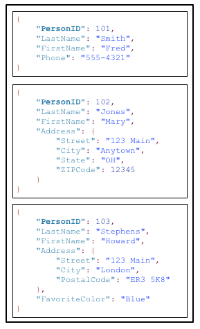
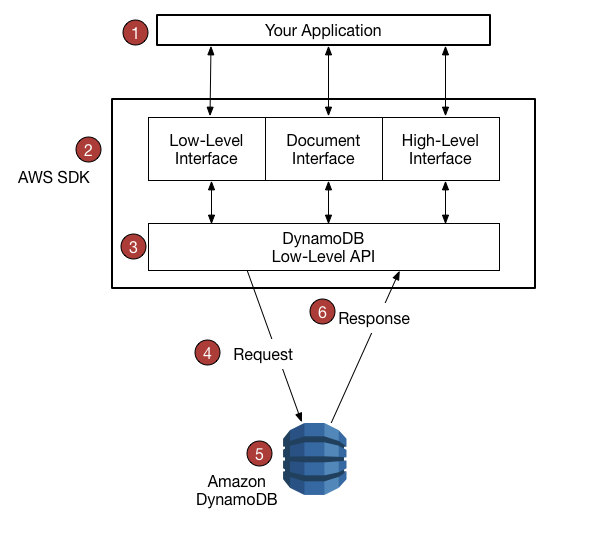

- 1. Overview
- 2. How it works
- 3. Java Programming with DanamoDB
- 4 High level programming interfaces for DynamoDB - DynamoDBMapper
- 4.1 Mapper class implementation
- 4.2 Use DynamoDBMapper Method
- 4.3 Java Annotations for DynamoDB
- 4.4 The DynamoDBMapper Class
- 4.5 Configuration settings for DynamoDBMapper
- 4.6 Example: CRUD Operations
- 4.7 Examples: Batch Write + Query + Scan + Optimistic Locking with Version Number
- 4.8 Example: Mapping Arbitrary Data
- 5. Best Practices
- 6. Working with Stream
1. Overview#
1.1 Features#
- Fully managed NoSQL database service
- offer encryption at rest
- on-demand backup capability
- allows you to create full backups of your tables for long-term retention and archival for regulatory compliance needs
- point-in-time recovery
- restore the table to any point in time during last 35 days
- TTL
- delete expired items from tables automatically to reduce storage usage
1.2 High availability and durability#
DynamoDB automatically spreads the data and traffic for your tables over a sufficient number of serversto handle your throughput and storage requirements, while maintaining consistent and fast performance. All of your data is stored on solid state disks (SSDs) and automatically replicated across multiple Availability Zones in an AWS region, providing built-in high availability and data durability. You can use global tables to keep DynamoDB tables in sync across AWS Regions. For more information, see Global Tables.
2. How it works#
2.1 Core Components#
2.1.1 Tables, Items, Attributes#
A table is a collection of items, each item is a collection of attributes.
DynamoDB uses primary keys to uniquely identify each item in a table and secondary indexes to provide more querying flexibility.
Below is a diagram showing a table named People:

Note about tables:
- Each item in the table has a unique identifier, or primary key, that distinguishes the item from all of the others in the table. In the People table, the primary key consists of one attribute (PersonID).
- Other than the primary key, the People table is schemaless, which means that neither the attributes nor their data types need to be defined beforehand. Each item can have its own distinct attributes.
- Some of the items have a nested attribute (Address). DynamoDB supports nested attributes up to 32 levels deep.
2.1.2 Primary Key#
When creating tables, you must specify the primary key of the table. The primary key uniquely identifies each item in the table, so that no two items can have the same key.
DynamoDB supports two different kinds of primary keys:
- Partition Key
DynamoDB uses the partition key’s value as input to an internal hash function. The output from the hash function determines the partition(Physical storage internal to DynamoDB) in which the item will be stored.
- Partition Key and sort key
A composite primary key, composed of two attributes: partition key and sort key.
DynamoDB uses the partition key value as input to an internal hash function. The output from the hash function determines the partition (physical storage internal to DynamoDB) in which the item will be stored. All items with the same partition key value are stored together, in sorted order by sort key value.
In a table that has a partition key and a sort key, it’s possible for two items to have the same partition key value. However, those two items must have different sort key values.
2.1.3 Secondary Indexes#
A secondary index lets you query the data in the table using an alternate key, in addtion to queries against the primary key.
After you create a secondary index on a table, you can read data from the index in much the same way as you do from the table.
- Global Secondary Index
An index with a partition key and sort key that can be different from those on the table
- Local Secondary Index
An index that has the same partition key as the table, but a different sort key
2.2 Limitations#
2.2.1 Capacity unit sizes(For Provisioned tables)#
One read capacity unit = one strongly consistent read per second, or two eventually consistent reads per second, for items up to 4 KB in size.
One write capacity unit = one write per second, for items up to 1 KB in size.
Transactional read requests require two read capacity units to perform one read per second for items up to 4 KB.
Transactional write requests require two write capacity units to perform one write per second for items up to 1 KB.
2.2.2 Request Unit Sizes(For On-Demand tables)#
One read request unit = one strongly consistent read, or two eventually consistent reads, for items up to 4 KB in size.
One write request unit = one write, for items up to 1 KB in size.
Transactional read requests require two read request units to perform one read for items up to 4 KB.
Transactional write requests require two write request units to perform one write for items up to 1 KB.
2.2.3 Throughtput Default Limits#
2.2.4 Tables#
Tables are unconstrained in terms of the number of items or the number of bytes.
For any AWS account, there is an initial limit of 256 tables per region.
You can define a maximum of 5 local secondary indexes.
There is an initial limit of 20 global secondary indexes per table.
2.2.5 API specific Limits#
- CreateTable/UpdateTable/DeleteTable
In general, you can have up to 50 CreateTable, UpdateTable, and DeleteTable requests running simultaneously (in any combination). In other words, the total number of tables in the CREATING, UPDATING or DELETING state cannot exceed 50.
- BatchGetItem
A single BatchGetItem operation can retrieve a maximum of 100 items. The total size of all the items retrieved cannot exceed 16 MB.
- BatchWriteItem
A single BatchWriteItem operation can contain up to 25 PutItem or DeleteItem requests. The total size of all the items written cannot exceed 16 MB.
- DescribeLimits
DescribeLimits should only be called periodically. You can expect throttling errors if you call it more than once in a minute.
- Query
The result set from a Query is limited to 1 MB per call. You can use the LastEvaluatedKey from the query response to retrieve more results.
- Scan
The result set from a Scan is limited to 1 MB per call. You can use the LastEvaluatedKey from the scan response to retrieve more results.
2.3 The DynamoDB API#
See Instructions here
2.3.1 Control Plane#
- CreateTable
- DescribeTable
- ListTables
- UpdateTable
- DeleteTable
2.3.2 Data Plane#
- Creating Data
- PutItem
- BatchWriteItem
- Reading Data
- GetItem
- BatchGetItem
- Query
- Scan
- Updating Data
- UpdateItem
- Deleting Data
- DeleteItem
- BatchWriteItem
- DynamoDB streams
- listStreams
- DescribeStream
- GetShardIterator: return a shard iterator, which is a data structure that your application uses to retrieve the records from the stream.
- GetRecords
2.4 Consistency and capacity#
Region - Availability Zones
When your application writes data to a DynamoDB table and receives an HTTP 200 response, the write has occured and is durable. The data is eventually consistent across all storage locations, usually within one second or less.
DDB supports eventually consistent and strongly consistent reads.
2.4.1 Eventually Consistent Reads#
When you read data from a DynamoDB table, the response might not reflect the results of a recently completed write operation. The response might include some stale data. If you repeat your read request after a short time, the response should return the latest data.
2.4.2 Strongly Consistent Reads#
When you request a strongly consistent read, DynamoDB returns a response with the most up-to-date data, reflecting the updates from all prior write operations that were successful. A strongly consistent read might not be available if there is a network delay or outage. Consistent reads are not supported on global secondary indexes (GSI).
2.4.3 Read/ Write Capacity Mode - on demand#
When you choose on-demand mode, DynamoDB instantly accommodates your workloads as they ramp up or down to any previously reached traffic level. If a workload’s traffic level hits a new peak, DynamoDB adapts rapidly to accommodate the workload. Tables that use on-demand mode deliver the same single-digit millisecond latency, service-level agreement (SLA) commitment, and security that DynamoDB already offers. You can choose on-demand for both new and existing tables and you can continue using the existing DynamoDB APIs without changing code.
2.4.4 Read/ Write Capacity Mode - provisioned#
If you choose provisioned mode, you specify the number of reads and writes per second that you require for your application. You can use auto scaling to adjust your table’s provisioned capacity automatically in response to traffic changes. This helps you govern your DynamoDB use to stay at or below a defined request rate in order to obtain cost predictability.
2.4.5 Read/ Write request units#
For on-demand mode tables, you don’t need to specify how much read and write throughput you expect your application to perform. DynamoDB charges you for the reads and writes that your application performs on your tables in terms of read request units and write request units.
One read request unit represents one strongly consistent read request, or two eventually consistent read requests, for an item up to 4 KB in size. Transactional read requests require 2 read request units to perform one read for items up to 4 KB. If you need to read an item that is larger than 4 KB, DynamoDB needs additional read request units. The total number of read request units required depends on the item size, and whether you want an eventually consistent or strongly consistent read. For example, if your item size is 8 KB, you require 2 read request units to sustain one strongly consistent read, 1 read request unit if you choose eventually consistent reads, or 4 read request units for a transactional read request.
One write request unit represents one write for an item up to 1 KB in size. If you need to write an item that is larger than 1 KB, DynamoDB needs to consume additional write request units. Transactional write requests require 2 write request units to perform one write for items up to 1 KB. The total number of write request units required depends on the item size. For example, if your item size is 2 KB, you require 2 write request units to sustain one write request or 4 read request units for a transactional write request.
2.4.6 DynamoDB Auto Scaling#
Manage throughput capacity for tables and global secondary indexes. With auto scaling, you define a range for read and write capacity units. You also define a target utilization percentage within that range. DynamoDB auto scaling seeks to maintain your target utilization, even as your application workload increases or decreases.
2.5 Partitions and Data Distribution#
A partition is an allocation of storage for a table, backed by solid-state drives (SSDs) and automatically replicated across multiple Availability Zones within an AWS Region. Partition management is handled entirely by DynamoDB—you never have to manage partitions yourself.
DynamoDB allocates additional partitions to a table in the following situations:
- If you increase the table’s provisioned throughput settings beyond what the existing partitions can support.
- If an existing partition fills to capacity and more storage space is required.
Choose a partition key that can have a large number of distinct values relative to the number of items in the table.
3. Java Programming with DanamoDB#
3.1 Work flow using Java#
3.1.1 Create a table#
public class MoviesCreateTable {
public static void main(String[] args) throws Exception {
AmazonDynamoDB client = AmazonDynamoDBClientBuilder.standard()
.withEndpointConfiguration(new AwsClientBuilder.EndpointConfiguration("http://localhost:8000", "us-west-2"))
.build();
DynamoDB dynamoDB = new DynamoDB(client);
String tableName = "Movies";
try {
System.out.println("Attempting to create table; please wait...");
Table table = dynamoDB.createTable(tableName,
Arrays.asList(new KeySchemaElement("year", KeyType.HASH), // Partition
// key
new KeySchemaElement("title", KeyType.RANGE)), // Sort key
Arrays.asList(new AttributeDefinition("year", ScalarAttributeType.N),
new AttributeDefinition("title", ScalarAttributeType.S)),
new ProvisionedThroughput(10L, 10L));
table.waitForActive();
System.out.println("Success. Table status: " + table.getDescription().getTableStatus());
}
catch (Exception e) {
System.err.println("Unable to create table: ");
System.err.println(e.getMessage());
}
}
}
3.1.2 Load data#
public class MoviesLoadData {
public static void main(String[] args) throws Exception {
AmazonDynamoDB client = AmazonDynamoDBClientBuilder.standard()
.withEndpointConfiguration(new AwsClientBuilder.EndpointConfiguration("http://localhost:8000", "us-west-2"))
.build();
DynamoDB dynamoDB = new DynamoDB(client);
Table table = dynamoDB.getTable("Movies");
JsonParser parser = new JsonFactory().createParser(new File("moviedata.json"));
JsonNode rootNode = new ObjectMapper().readTree(parser);
Iterator<JsonNode> iter = rootNode.iterator();
ObjectNode currentNode;
while (iter.hasNext()) {
currentNode = (ObjectNode) iter.next();
int year = currentNode.path("year").asInt();
String title = currentNode.path("title").asText();
try {
table.putItem(new Item().withPrimaryKey("year", year, "title", title).withJSON("info",
currentNode.path("info").toString()));
System.out.println("PutItem succeeded: " + year + " " + title);
}
catch (Exception e) {
System.err.println("Unable to add movie: " + year + " " + title);
System.err.println(e.getMessage());
break;
}
}
parser.close();
}
}
3.1.3 Create a new item#
public class MoviesItemOps01 {
public static void main(String[] args) throws Exception {
AmazonDynamoDB client = AmazonDynamoDBClientBuilder.standard()
.withEndpointConfiguration(new AwsClientBuilder.EndpointConfiguration("http://localhost:8000", "us-west-2"))
.build();
DynamoDB dynamoDB = new DynamoDB(client);
Table table = dynamoDB.getTable("Movies");
int year = 2015;
String title = "The Big New Movie";
final Map<String, Object> infoMap = new HashMap<String, Object>();
infoMap.put("plot", "Nothing happens at all.");
infoMap.put("rating", 0);
try {
System.out.println("Adding a new item...");
PutItemOutcome outcome = table
.putItem(new Item().withPrimaryKey("year", year, "title", title).withMap("info", infoMap));
System.out.println("PutItem succeeded:\n" + outcome.getPutItemResult());
}
catch (Exception e) {
System.err.println("Unable to add item: " + year + " " + title);
System.err.println(e.getMessage());
}
}
}
3.1.4 Read an Item#
public class MoviesItemOps02 {
public static void main(String[] args) throws Exception {
AmazonDynamoDB client = AmazonDynamoDBClientBuilder.standard()
.withEndpointConfiguration(new AwsClientBuilder.EndpointConfiguration("http://localhost:8000", "us-west-2"))
.build();
DynamoDB dynamoDB = new DynamoDB(client);
Table table = dynamoDB.getTable("Movies");
int year = 2015;
String title = "The Big New Movie";
GetItemSpec spec = new GetItemSpec().withPrimaryKey("year", year, "title", title);
try {
System.out.println("Attempting to read the item...");
Item outcome = table.getItem(spec);
System.out.println("GetItem succeeded: " + outcome);
}
catch (Exception e) {
System.err.println("Unable to read item: " + year + " " + title);
System.err.println(e.getMessage());
}
}
}
3.1.5 Update an Item#
public class MoviesItemOps03 {
public static void main(String[] args) throws Exception {
AmazonDynamoDB client = AmazonDynamoDBClientBuilder.standard()
.withEndpointConfiguration(new AwsClientBuilder.EndpointConfiguration("http://localhost:8000", "us-west-2"))
.build();
DynamoDB dynamoDB = new DynamoDB(client);
Table table = dynamoDB.getTable("Movies");
int year = 2015;
String title = "The Big New Movie";
UpdateItemSpec updateItemSpec = new UpdateItemSpec().withPrimaryKey("year", year, "title", title)
.withUpdateExpression("set info.rating = :r, info.plot=:p, info.actors=:a")
.withValueMap(new ValueMap().withNumber(":r", 5.5).withString(":p", "Everything happens all at once.")
.withList(":a", Arrays.asList("Larry", "Moe", "Curly")))
.withReturnValues(ReturnValue.UPDATED_NEW);
try {
System.out.println("Updating the item...");
UpdateItemOutcome outcome = table.updateItem(updateItemSpec);
System.out.println("UpdateItem succeeded:\n" + outcome.getItem().toJSONPretty());
}
catch (Exception e) {
System.err.println("Unable to update item: " + year + " " + title);
System.err.println(e.getMessage());
}
}
}
3.1.6 Update an Item conditionally#
public class MoviesItemOps05 {
public static void main(String[] args) throws Exception {
AmazonDynamoDB client = AmazonDynamoDBClientBuilder.standard()
.withEndpointConfiguration(new AwsClientBuilder.EndpointConfiguration("http://localhost:8000", "us-west-2"))
.build();
DynamoDB dynamoDB = new DynamoDB(client);
Table table = dynamoDB.getTable("Movies");
int year = 2015;
String title = "The Big New Movie";
UpdateItemSpec updateItemSpec = new UpdateItemSpec()
.withPrimaryKey(new PrimaryKey("year", year, "title", title)).withUpdateExpression("remove info.actors[0]")
.withConditionExpression("size(info.actors) > :num").withValueMap(new ValueMap().withNumber(":num", 3))
.withReturnValues(ReturnValue.UPDATED_NEW);
// Conditional update (we expect this to fail)
try {
System.out.println("Attempting a conditional update...");
UpdateItemOutcome outcome = table.updateItem(updateItemSpec);
System.out.println("UpdateItem succeeded:\n" + outcome.getItem().toJSONPretty());
}
catch (Exception e) {
System.err.println("Unable to update item: " + year + " " + title);
System.err.println(e.getMessage());
}
}
}
3.1.7 Delete an Item#
public class MoviesItemOps06 {
public static void main(String[] args) throws Exception {
AmazonDynamoDB client = AmazonDynamoDBClientBuilder.standard()
.withEndpointConfiguration(new AwsClientBuilder.EndpointConfiguration("http://localhost:8000", "us-west-2"))
.build();
DynamoDB dynamoDB = new DynamoDB(client);
Table table = dynamoDB.getTable("Movies");
int year = 2015;
String title = "The Big New Movie";
DeleteItemSpec deleteItemSpec = new DeleteItemSpec()
.withPrimaryKey(new PrimaryKey("year", year, "title", title)).withConditionExpression("info.rating <= :val")
.withValueMap(new ValueMap().withNumber(":val", 5.0));
// Conditional delete (we expect this to fail)
try {
System.out.println("Attempting a conditional delete...");
table.deleteItem(deleteItemSpec);
System.out.println("DeleteItem succeeded");
}
catch (Exception e) {
System.err.println("Unable to delete item: " + year + " " + title);
System.err.println(e.getMessage());
}
}
}
3.1.8 Scan#
The scan method reads every item in the entire table, and returns all the data in the table, you can provide an optional filter_expression so that only the items matching your criteria are returned. However, the filter is applied only after the entire table has been scanned.
public class MoviesScan {
public static void main(String[] args) throws Exception {
AmazonDynamoDB client = AmazonDynamoDBClientBuilder.standard()
.withEndpointConfiguration(new AwsClientBuilder.EndpointConfiguration("http://localhost:8000", "us-west-2"))
.build();
DynamoDB dynamoDB = new DynamoDB(client);
Table table = dynamoDB.getTable("Movies");
ScanSpec scanSpec = new ScanSpec().withProjectionExpression("#yr, title, info.rating")
.withFilterExpression("#yr between :start_yr and :end_yr").withNameMap(new NameMap().with("#yr", "year"))
.withValueMap(new ValueMap().withNumber(":start_yr", 1950).withNumber(":end_yr", 1959));
try {
ItemCollection<ScanOutcome> items = table.scan(scanSpec);
Iterator<Item> iter = items.iterator();
while (iter.hasNext()) {
Item item = iter.next();
System.out.println(item.toString());
}
}
catch (Exception e) {
System.err.println("Unable to scan the table:");
System.err.println(e.getMessage());
}
}
}
3.2 AWS SDK support#
3.2.1 AWS SDK support workflow#

You write an application using an AWS SDK for your programming language.
Each AWS SDK provides one or more programmatic interfaces for working with DynamoDB. The specific interfaces available depend on which programming language and AWS SDK you use.
The AWS SDK constructs HTTP(S) requests for use with the low-level DynamoDB API.
The AWS SDK sends the request to the DynamoDB endpoint.
DynamoDB executes the request. If the request is successful, DynamoDB returns an HTTP 200 response code (OK). If the request is unsuccessful, DynamoDB returns an HTTP error code and an error message.
The AWS SDK processes the response and propagates it back to your application.
3.2.2 Services AWS SDK provides#
- formatting HTTP(s) requests and serializing request parameters
- generating a cryptographic signature for each request
- forwarding request to a DynamoDB endpoint and receiving responses from DynamoDB
- extracting the results from those responses
- implementing basic retry logic in case of errors
3.2.3 Programmatic Interfaces#
- Low level interfaces
Need data type descriptors
result.getItem().getN() // get number
- Document Interfaces
Documnet interface, allowing to perform data plane operations(creat, read, update, delete) on tables and indexes. No need to specify the data type descriptors. Data types are implied by the semantics of the data itself. Also provide methods to easily convert JSON documents to and from native DDB data types.
- Object Persistence Interface
Provid an object persistence interface where you do not directly perform data plane operations. Instead, you create objects that represent items in DynamoDB tables and indexes, and interact only with those objects. This allow you to write object-centric code, rather than database-centric code.
@DynamoDBTable(tableName="Music")
public class MusicItem {
private String artist;
private String songTitle;
private String albumTitle;
private int year;
@DynamoDBHashKey(attributeName="Artist")
public String getArtist() { return artist;}
public void setArtist(String artist) {this.artist = artist;}
@DynamoDBRangeKey(attributeName="SongTitle")
public String getSongTitle() { return songTitle;}
public void setSongTitle(String songTitle) {this.songTitle = songTitle;}
@DynamoDBAttribute(attributeName = "AlbumTitle")
public String getAlbumTitle() { return albumTitle;}
public void setAlbumTitle(String albumTitle) {this.albumTitle = albumTitle;}
@DynamoDBAttribute(attributeName = "Year")
public int getYear() { return year; }
public void setYear(int year) { this.year = year; }
}
3.2.4 Low level API#
The DynamoDB low-level API is the protocol level interface for Amazon DynamoDB. At this level, every HTTP(s) request must be correctly formatted and carry a valid digital signature.
The low-level DynamoDB API uses JavaScript Object Notation (JSON) as a wire protocol format. JSON presents data in a hierarchy, so that both data values and data structure are conveyed simultaneously. Name-value pairs are defined in the format name:value. The data hierarchy is defined by nested brackets of name-value pairs.
DynamoDB uses JSON only as a transport protocol, not as a storage format. The AWS SDKs use JSON to send data to DynamoDB, and DynamoDB responds with JSON, but DynamoDB does not store data persistently in JSON format.
3.2.4.1 Request Format#
The DynamoDB low-level API accepts HTTP(S) POST requests as input. The AWS SDKs construct these requests for you.
Suppose that you have a table named Pets, with a key schema consisting of AnimalType (partition key) and Name (sort key). Both of these attributes are of type string. To retrieve an item from Pets, the AWS SDK constructs a request as shown following:
POST / HTTP/1.1
Host: dynamodb.<region>.<domain>;
Accept-Encoding: identity
Content-Length: <PayloadSizeBytes>
User-Agent: <UserAgentString>
Content-Type: application/x-amz-json-1.0
Authorization: AWS4-HMAC-SHA256 Credential=<Credential>, SignedHeaders=<Headers>, Signature=<Signature>
X-Amz-Date: <Date>
X-Amz-Target: DynamoDB_20120810.GetItem
{
"TableName": "Pets",
"Key": {
"AnimalType": {"S": "Dog"},
"Name": {"S": "Fido"}
}
}
- The Authorization header contains information required for DynamoDB to authenticate the request.
- The X-Amz-Target header contains the name of a DynamoDB operation: GetItem. (This is also accompanied by the low-level API version, in this case 20120810.)
- The payload (body) of the request contains the parameters for the operation, in JSON format. For the GetItem operation, the parameters are TableName and Key.
3.2.4.2 Response Format#
Upon receipt of the request, DynamoDB processes it and returns a response. For the request shown above, the HTTP(S) response payload contains the results from the operation.
HTTP/1.1 200 OK
x-amzn-RequestId: <RequestId>
x-amz-crc32: <Checksum>
Content-Type: application/x-amz-json-1.0
Content-Length: <PayloadSizeBytes>
Date: <Date>
{
"Item": {
"Age": {"N": "8"},
"Colors": {
"L": [
{"S": "White"},
{"S": "Brown"},
{"S": "Black"}
]
},
"Name": {"S": "Fido"},
"Vaccinations": {
"M": {
"Rabies": {
"L": [
{"S": "2009-03-17"},
{"S": "2011-09-21"},
{"S": "2014-07-08"}
]
},
"Distemper": {"S": "2015-10-13"}
}
},
"Breed": {"S": "Beagle"},
"AnimalType": {"S": "Dog"}
}
}
3.2.4.3 Data Type Descriptors#
The low-level DynamoDB API protocol requires each attribute to be accompanied by a data type descriptor. Data type descriptors are tokens that tell DynamoDB how to interpret each attribute.
The examples in Request Format and Response Format show examples of how data type descriptors are used. The GetItem request specifies S for the Pets key schema attributes (AnimalType and Name), which are of type string. The GetItem response contains a Pets item with attributes of type string (S), number (N), map (M), and list (L).
3.3 Error Handling#
3.3.1 Error Components#
Unsuccessful: returns an error, which contains:
- An HTTP status code
- An exception name
- An error message
The AWS SDK tale care of propagating errors to your application, so that you can take appropriate action.
3.3.2 Error Messages and Codes#
- HTTP status code 400
- AccessDeniedException
- The client did not correctly sign the request.
- ConditionalCheckFailedException
- You specified a condition that evaluated to false.
- IncompleteSignatureException
- The request signature did not include all of the required components.
- ItemCollectionSizeLimitExceededException
- For a table with a local secondary index, a group of items with the same partition key value has exceeded the maximum size limit of 10 GB.
- LimitExceededException
- There are too many concurrent control plane operations. The cumulative number of tables and indexes in the CREATING, DELETING, or UPDATING state cannot exceed 50.
- MissingAuthenticationTokenException
- The request did not include the required authorization header, or it was malformed.
- ProvisionedThroughputExceededException
- Your request rate is too high. The AWS SDKs for DynamoDB automatically retry requests that receive this exception. Your request is eventually successful, unless your retry queue is too large to finish.
- RequestLimitExceeded
- Throughput exceeds the current throughput limit for your account.
- ResourceInUseException
- The resource which you are attempting to change is in use.
- AccessDeniedException
Table table = dynamoDB.getTable("Movies");
try {
Item item = table.getItem("year", 1978, "title", "Superman");
if (item != null) {
System.out.println("Result: " + item);
} else {
//No such item exists in the table
System.out.println("Item not found");
}
} catch (AmazonServiceException ase) {
System.err.println("Could not complete operation");
System.err.println("Error Message: " + ase.getMessage());
System.err.println("HTTP Status: " + ase.getStatusCode());
System.err.println("AWS Error Code: " + ase.getErrorCode());
System.err.println("Error Type: " + ase.getErrorType());
System.err.println("Request ID: " + ase.getRequestId());
} catch (AmazonClientException ace) {
System.err.println("Internal error occured communicating with DynamoDB");
System.out.println("Error Message: " + ace.getMessage());
3.3.3 Error Retries and Expotential Backoff#
Numerous components on a network, such as DNS servers, switches, load balancers, and others can generate errors anywhere in the life of a given request. The usual technique for dealing with these error responses in a networked environment is to implement retries in the client application. This technique increases the reliability of the application.
In addition to simple retries, each AWS SDK implements exponential backoff algorithm for better flow control. The concept behind exponential backoff is to use progressively longer waits between retries for consecutive error responses. For example, up to 50 milliseconds before the first retry, up to 100 milliseconds before the second, up to 200 milliseconds before third, and so on.
3.3.4 Batch Operations and Error Handling#
The DynamoDB low-level API supports batch operations for reads and writes. BatchGetItem reads items from one or more tables, and BatchWriteItem puts or deletes items in one or more tables. These batch operations are implemented as wrappers around other non-batch DynamoDB operations. In other words, BatchGetItem invokes GetItem once for each item in the batch. Similarly,BatchWriteItem invokes DeleteItem or PutItem, as appropriate, for each item in the batch.
A batch operation can tolerate the failure of individual requests in the batch. For example, consider a BatchGetItem request to read five items. Even if some of the underlying GetItem requests fail, this does not cause the entire BatchGetItem operation to fail. On the other hand, if all of the five reads operations fail, then the entire BatchGetItem will fail.
The batch operations return information about individual requests that fail, so that you can diagnose the problem and retry the operation. For BatchGetItem, the tables and primary keys in question are returned in the UnprocessedKeys parameter of the request. For BatchWriteItem, similar information is returned in UnprocessedItems.
4 High level programming interfaces for DynamoDB - DynamoDBMapper#
4.1 Mapper class implementation#
With a low level database interface, developers must write methods for reading or writing object data to database tables and vice versa. The amount of extra code required for each combination of object type and database table can seem overwhelming.
The higher-level interfaces for DynamoDB let you define the relationships between objects in your program and the database tables that store those objects’ data. After you define this mapping, you call simple object methods such as save, load, or delete, and the underlying low-level DynamoDB operations are automatically invoked on your behalf. This allows you to write object-centric code, rather than database-centric code.
AWS SDK provides a DynamoDBMapper class, allowing you to map your client side classes to DynamoDB tables. To use DynamoDBMapper, you define the relationship between items in a DynamoDB table and their corresponding object instances in your code.
@DynamoDBTable(tableName="ProductCatalog")
public class CatalogItem {
private Integer id;
private String title;
private String ISBN;
private Set<String> bookAuthors;
private String someProp;
@DynamoDBHashKey(attributeName="Id")
public Integer getId() { return id; }
public void setId(Integer id) {this.id = id; }
@DynamoDBAttribute(attributeName="Title")
public String getTitle() {return title; }
public void setTitle(String title) { this.title = title; }
@DynamoDBAttribute(attributeName="ISBN")
public String getISBN() { return ISBN; }
public void setISBN(String ISBN) { this.ISBN = ISBN; }
@DynamoDBAttribute(attributeName="Authors")
public Set<String> getBookAuthors() { return bookAuthors; }
public void setBookAuthors(Set<String> bookAuthors) { this.bookAuthors = bookAuthors; }
@DynamoDBIgnore
public String getSomeProp() { return someProp; }
public void setSomeProp(String someProp) { this.someProp = someProp; }
}
4.1.1 @DynamoDBTable#
Maps the class CatalogItem to table ProductCatalog. You can store individual class instances as items in the table.
4.1.2 @DynamoDBHashKey#
Maps the Id property to the primary key
4.1.3 @DynamoDBAttribute#
This annotation is optional when the name of the DynamoDB attribute matches the name of the property declared in the class. When they differ, use this annotation with the attributeName() parameter to specify which DynamoDB attribute this property corresponds to.
4.1.4 @DynamoDBIgnore#
Those properties will not be mapped to any attributes in the table
4.2 Use DynamoDBMapper Method#
Use Mapper method to write an instance of that class to a corresponding item in the Catalog table.
AmazonDynamoDB client = AmazonDynamoDBClientBuilder.standard().build();
DynamoDBMapper mapper = new DynamoDBMapper(client);
CatalogItem item = new CatalogItem();
item.setId(102);
item.setTitle("Book 102 Title");
item.setISBN("222-2222222222");
item.setBookAuthors(new HashSet<String>(Arrays.asList("Author 1", "Author 2")));
item.setSomeProp("Test");
mapper.save(item);
Following code shows how to retrieve the item and access some of its attributes:
CatalogItem partitionKey = new CatalogItem();
partitionKey.setId(102);
DynamoDBQueryExpression<CatalogItem> queryExpression = new DynamoDBQueryExpression<CatalogItem>()
.withHashKeyValues(partitionKey);
List<CatalogItem> itemList = mapper.query(CatalogItem.class, queryExpression);
for (int i = 0; i < itemList.size(); i++) {
System.out.println(itemList.get(i).getTitle());
System.out.println(itemList.get(i).getBookAuthors());
}
4.3 Java Annotations for DynamoDB#
4.3.1 DynamoDBAttribute#
- Maps a property to a table attribute.
@DynamoDBAttribute(attributeName = "Authors")
public List<String> getBookAuthors() { return BookAuthors; }
public void setBookAuthors(List<String> BookAuthors) { this.BookAuthors = BookAuthors; }
4.3.2 DynamoDBAutoGeneratedKey#
- Marks a partition key or sort key property as being auto-generated. DynamoDBMapper will generate a random UUID when saving these attributes. Only String properties can be marked as auto-generated keys.
@DynamoDBTable(tableName="AutoGeneratedKeysExample")
public class AutoGeneratedKeys {
private String id;
private String payload;
@DynamoDBHashKey(attributeName = "Id")
@DynamoDBAutoGeneratedKey
public String getId() { return id; }
public void setId(String id) { this.id = id; }
@DynamoDBAttribute(attributeName="payload")
public String getPayload() { return this.payload; }
public void setPayload(String payload) { this.payload = payload; }
public static void saveItem() {
AutoGeneratedKeys obj = new AutoGeneratedKeys();
obj.setPayload("abc123");
// id field is null at this point
DynamoDBMapper mapper = new DynamoDBMapper(dynamoDBClient);
mapper.save(obj);
System.out.println("Object was saved with id " + obj.getId());
}
}
4.3.3 DynamoDBDocument#
- indicates that a class can be serialized as a DynamoDB document
For example, suppose you wanted to map a JSON document to a DynamoDB attribute of type Map (M). The following code snippet defines an item containing a nested attribute (Pictures) of type Map.
public class ProductCatalogItem {
private Integer id; //partition key
private Pictures pictures;
/* ...other attributes omitted... */
@DynamoDBHashKey(attributeName="Id")
public Integer getId() { return id;}
public void setId(Integer id) {this.id = id;}
@DynamoDBAttribute(attributeName="Pictures")
public Pictures getPictures() { return pictures;}
public void setPictures(Pictures pictures) {this.pictures = pictures;}
// Additional properties go here.
@DynamoDBDocument
public static class Pictures {
private String frontView;
private String rearView;
private String sideView;
@DynamoDBAttribute(attributeName = "FrontView")
public String getFrontView() { return frontView; }
public void setFrontView(String frontView) { this.frontView = frontView; }
@DynamoDBAttribute(attributeName = "RearView")
public String getRearView() { return rearView; }
public void setRearView(String rearView) { this.rearView = rearView; }
@DynamoDBAttribute(attributeName = "SideView")
public String getSideView() { return sideView; }
public void setSideView(String sideView) { this.sideView = sideView; }
}
}
You could then save a new ProductCatalog item, with pictures, as shown in the following snippet:
ProductCatalogItem item = new ProductCatalogItem();
Pictures pix = new Pictures();
pix.setFrontView("http://example.com/products/123_front.jpg");
pix.setRearView("http://example.com/products/123_rear.jpg");
pix.setSideView("http://example.com/products/123_left_side.jpg");
item.setPictures(pix);
item.setId(123);
mapper.save(item);
The resulting ProductCalalog item would look like this:
{
"Id" : 123
"Pictures" : {
"SideView" : "http://example.com/products/123_left_side.jpg",
"RearView" : "http://example.com/products/123_rear.jpg",
"FrontView" : "http://example.com/products/123_front.jpg"
}
}
4.3.4 DynamoDBHashKey#
- Maps a class property to the partition key of the table. The property must be one of the scalar string, number or binary types; it cannot be a collection type.
@DynamoDBTable(tableName="ProductCatalog")
public class CatalogItem {
private Integer Id;
@DynamoDBHashKey(attributeName="Id")
public Integer getId() {
return Id;
}
public void setId(Integer Id) {
this.Id = Id;
}
// Additional properties go here.
}
4.3.5 DynamoDBIgnore#
- Indicates to the DynamoDBMapper instance that the associated property should be ignored. When saving data to the table, the DynamoDBMapper does not save property to the table.
4.3.6 DynamoDBIndexHashKey#
- Maps a class property to the partition key of a global secondary index. The property must be one of the scalar string, number or binary types; it cannot be a collection type.
- Use this annotation if you need to Query a global secondary index. You must specify the index name (globalSecondaryIndexName). If the name of the class property is different from the index partition key, you must also specify the name of that index attribute (attributeName).
- Global Secondary Indexes
- aims to speed up queries on non-key values
4.3.7 DynamoDBRangeKey#
- Maps a class property to the sort key of the table. The property mush be one of the scalar string, number or binary types; it cannot be a collection type.
- If the primary key is composite (partition key and sort key), you can use this tag to map your class field to the sort key.
@DynamoDBTable(tableName="Reply")
public class Reply {
private Integer id;
private String replyDateTime;
@DynamoDBHashKey(attributeName="Id")
public Integer getId() { return id; }
public void setId(Integer id) { this.id = id; }
@DynamoDBRangeKey(attributeName="ReplyDateTime")
public String getReplyDateTime() { return replyDateTime; }
public void setReplyDateTime(String replyDateTime) { this.replyDateTime = replyDateTime; }
// Additional properties go here.
}
4.3.8 DynamoDBTable#
- Identifies the target table in DynamoDB.
- The @DynamoDBTable annotation can be inherited. Any new class that inherits from the Developer class also maps to the People table. For example, assume that you create a Lead class that inherits from the Developer class. Because you mapped the Developer class to the People table, the Lead class objects are also stored in the same table.
@DynamoDBTable(tableName="People")
public class Developer { ...}
4.3.9 DynamoDBTypeConverted#
+ Annotation to mark a property as using a custom type-converter.
+ This interface lets you map your own arbitrary data types to a data type that is natively supported by DynamoDB
4.3.10 DynamoDBTyped#
+ Annotation to override the standard attribute type binding. Standard types do not require the annotation if applying the default attribute binding for that type.
4.3.11 DynamoDBVersionAttribute#
- Identifies a class property for storing an optimistic locking version number. DynamoDBMapper assigns a version number to this property when it saves a new item, and increments it each time you update the item.
4.4 The DynamoDBMapper Class#
The DynamoDBMapper class is the entry point to DynamoDB. It provides access to a DynamoDB endpoint and enables you to access data in various tables, perform various CRUD operations on items, and execute queries and scans against tables.
4.4.1 save#
Saves the specified object to the table. The object that you wish to save is the only required parameter for this method. You can provide optional configuration parameters using the DynamoDBMapperConfig object.
If an item that has the same primary key does not exist, this method creates a new item in the table. If an item that has the same primary key exists, it updates the existing item. If the partition key and sort key are of type String, and annotated with @DynamoDBAutoGeneratedKey, then they are given a random universally unique identifier (UUID) if left uninitialized. Version fields annotated with @DynamoDBVersionAttribute will be incremented by one. Additionally, if a version field is updated or a key generated, the object passed in is updated as a result of the operation.
By default, only attributes corresponding to mapped class properties are updated; any additional existing attributes on an item are unaffected. However, if you specify SaveBehavior.CLOBBER, you can force the item to be completely overwritten.
mapper.save(obj, new DynamoDBMapperConfig(DynamoDBMapperConfig.SaveBehavior.CLOBBER));
4.4.2 load#
Retrieves an item from a table. You must provide the primary key of the item that you wish to retrieve. You can provide optional configuration parameters using the DynamoDBMapperConfig object.
CatalogItem item = mapper.load(CatalogItem.class, item.getId(),
new DynamoDBMapperConfig(DynamoDBMapperConfig.ConsistentReads.CONSISTENT));
4.4.3 delete#
Deletes an item from the table, must pass in an object instance of the mapped class.
4.4.4 query#
Queries a table or a secondary index. You can query a table or an index only if it has a composite primary key (partition key and sort key). This method requires you to provide a partition key value and a query filter that is applied on the sort key. A filter expression includes a condition and a value.
String forumName = "DynamoDB";
String forumSubject = "DynamoDB Thread 1";
String partitionKey = forumName + "#" + forumSubject;
long twoWeeksAgoMilli = (new Date()).getTime() - (14L*24L*60L*60L*1000L);
Date twoWeeksAgo = new Date();
twoWeeksAgo.setTime(twoWeeksAgoMilli);
SimpleDateFormat df = new SimpleDateFormat("yyyy-MM-dd'T'HH:mm:ss.SSS'Z'");
String twoWeeksAgoStr = df.format(twoWeeksAgo);
Map<String, AttributeValue> eav = new HashMap<String, AttributeValue>();
eav.put(":v1", new AttributeValue().withS(partitionKey));
eav.put(":v2",new AttributeValue().withS(twoWeeksAgoStr.toString()));
DynamoDBQueryExpression<Reply> queryExpression = new DynamoDBQueryExpression<Reply>()
.withKeyConditionExpression("Id = :v1 and ReplyDateTime > :v2")
.withExpressionAttributeValues(eav);
List<Reply> latestReplies = mapper.query(Reply.class, queryExpression);
By default, the query method returns a “lazy-loaded“ collection. It initially returns only one page of results, and then makes a service call for the next page if needed. To obtain all the matching items, you only need to iterate over the latestReplies collection.
To query an index, you must first model the index as a mapper class, Suppose that the Reply table has a global secondary index named PostedBy-Message-Index. The partition key for this index is PostedBy, and the sort key is Message. The class definition for an item in the index would look like this:
@DynamoDBTable(tableName="Reply")
public class PostedByMessage {
private String postedBy;
private String message;
@DynamoDBIndexHashKey(globalSecondaryIndexName = "PostedBy-Message-Index", attributeName = "PostedBy")
public String getPostedBy() { return postedBy; }
public void setPostedBy(String postedBy) { this.postedBy = postedBy; }
@DynamoDBIndexRangeKey(globalSecondaryIndexName = "PostedBy-Message-Index", attributeName = "Message")
public String getMessage() { return message; }
public void setMessage(String message) { this.message = message; }
// Additional properties go here.
}
The @DynamoDBTable annotation indicates that this index is associated with the Reply table. The @DynamoDBIndexHashKey annotation denotes the partition key (PostedBy) of the index, and @DynamoDBIndexRangeKey denotes the sort key (Message) of the index.
Now you can use DynamoDBMapper to query the index, retrieving a subset of messages that were posted by a particular user. You must specify withIndexName so that DynamoDB knows which index to query. In the following code snippet, we are querying a global secondary index. Because global secondary indexes support eventually consistent reads, but not strongly consistent reads, we must specify withConsistentRead(false).
HashMap<String, AttributeValue> eav = new HashMap<String, AttributeValue>();
eav.put(":v1", new AttributeValue().withS("User A"));
eav.put(":v2", new AttributeValue().withS("DynamoDB"));
DynamoDBQueryExpression<PostedByMessage> queryExpression = new DynamoDBQueryExpression<PostedByMessage>()
.withIndexName("PostedBy-Message-Index")
.withConsistentRead(false)
.withKeyConditionExpression("PostedBy = :v1 and begins_with(Message, :v2)")
.withExpressionAttributeValues(eav);
List<PostedByMessage> iList = mapper.query(PostedByMessage.class, queryExpression);
4.5 Configuration settings for DynamoDBMapper#
When you create an instance of DynamoDBMapper, it has certain default behaviors; you can override these defaults by using the DynamoDBmapperConfig class.
AmazonDynamoDB client = AmazonDynamoDBClientBuilder.standard().build();
DynamoDBMapperConfig mapperConfig = new DynamoDBMapperConfig(
DynamoDBMapperConfig.SaveBehavior.CLOBBER,
DynamoDBMapperConfig.ConsistentReads.CONSISTENT,
null, //TableNameOverride - leaving this at default setting
DynamoDBMapperConfig.PaginationLoadingStrategy.EAGER_LOADING
);
DynamoDBMapper mapper = new DynamoDBMapper(client, mapperConfig, cp);
API doc for DynamoDBMapperConfig
- DynamoDBMapperConfig.ConsistentReads
- EVENTUAL—the mapper instance uses an eventually consistent read request ++(default)++
- CONSISTENT—the mapper instance uses a strongly consistent read request. You can use this optional setting with load, query, or scan operations. Strongly consistent reads have implications for performance and billing; see the DynamoDB product detail page for more information
- DynamoDBMapperConfig.PaginationLoadingStrategy - controls how the mapper instance processes a paginated list of data, such as results from a query or scan
- LAZY_LOADING—the mapper instance loads data when possible, and keeps all loaded results in memory ++(default)++
- EAGER_LOADING—the mapper instance loads the data as soon as the list is initialized
- ITERATION_ONLY—you can only use an Iterator to read from the list. During the iteration, the list will clear all the previous results before loading the next page, so that the list will keep at most one page of the loaded results in memory. This also means the list can only be iterated once. This strategy is recommended when handling large items, in order to reduce memory overhead
- DynamoDBMapperConfig.SaveBehavior enumeration value - Specifies how the mapper instance should deal with attributes during save operations
- UPDATE—during a save operation, all modeled attributes are updated, and unmodeled attributes are unaffected. Primitive number types (byte, int, long) are set to 0. Object types are set to null. ++(default)++
- CLOBBER—clears and replaces all attributes, included unmodeled ones, during a save operation. This is done by deleting the item and re-creating it. Versioned field constraints are also disregarded.
- DynamoDBMapperConfig.TableNameOverride object—Instructs the mapper instance to ignore the table name specified by a class’s DynamoDBTable annotation, and instead use a different table name that you supply. This is useful when partitioning your data into multiple tables at run time.
4.6 Example: CRUD Operations#
The following Java code example declares a CatalogItem class that has Id, Title, ISBN and Authors properties. It uses the annotations to map these properties to the ProductCatalog table in DynamoDB. The code example then uses the DynamoDBMapper to save a book object, retrieve it, update it and delete the book item.
package com.amazonaws.codesamples.datamodeling;
import java.io.IOException;
import java.util.Arrays;
import java.util.HashSet;
import java.util.Set;
import com.amazonaws.services.dynamodbv2.AmazonDynamoDB;
import com.amazonaws.services.dynamodbv2.AmazonDynamoDBClientBuilder;
import com.amazonaws.services.dynamodbv2.datamodeling.DynamoDBAttribute;
import com.amazonaws.services.dynamodbv2.datamodeling.DynamoDBHashKey;
import com.amazonaws.services.dynamodbv2.datamodeling.DynamoDBMapper;
import com.amazonaws.services.dynamodbv2.datamodeling.DynamoDBMapperConfig;
import com.amazonaws.services.dynamodbv2.datamodeling.DynamoDBTable;
public class DynamoDBMapperCRUDExample {
static AmazonDynamoDB client = AmazonDynamoDBClientBuilder.standard().build();
public static void main(String[] args) throws IOException {
testCRUDOperations();
System.out.println("Example complete!");
}
@DynamoDBTable(tableName = "ProductCatalog")
public static class CatalogItem {
private Integer id;
private String title;
private String ISBN;
private Set<String> bookAuthors;
// Partition key
@DynamoDBHashKey(attributeName = "Id")
public Integer getId() {
return id;
}
public void setId(Integer id) {
this.id = id;
}
@DynamoDBAttribute(attributeName = "Title")
public String getTitle() {
return title;
}
public void setTitle(String title) {
this.title = title;
}
@DynamoDBAttribute(attributeName = "ISBN")
public String getISBN() {
return ISBN;
}
public void setISBN(String ISBN) {
this.ISBN = ISBN;
}
@DynamoDBAttribute(attributeName = "Authors")
public Set<String> getBookAuthors() {
return bookAuthors;
}
public void setBookAuthors(Set<String> bookAuthors) {
this.bookAuthors = bookAuthors;
}
@Override
public String toString() {
return "Book [ISBN=" + ISBN + ", bookAuthors=" + bookAuthors + ", id=" + id + ", title=" + title + "]";
}
}
private static void testCRUDOperations() {
CatalogItem item = new CatalogItem();
item.setId(601);
item.setTitle("Book 601");
item.setISBN("611-1111111111");
item.setBookAuthors(new HashSet<String>(Arrays.asList("Author1", "Author2")));
// Save the item (book).
DynamoDBMapper mapper = new DynamoDBMapper(client);
mapper.save(item);
// Retrieve the item.
CatalogItem itemRetrieved = mapper.load(CatalogItem.class, 601);
System.out.println("Item retrieved:");
System.out.println(itemRetrieved);
// Update the item.
itemRetrieved.setISBN("622-2222222222");
itemRetrieved.setBookAuthors(new HashSet<String>(Arrays.asList("Author1", "Author3")));
mapper.save(itemRetrieved);
System.out.println("Item updated:");
System.out.println(itemRetrieved);
// Retrieve the updated item.
DynamoDBMapperConfig config = new DynamoDBMapperConfig(DynamoDBMapperConfig.ConsistentReads.CONSISTENT);
CatalogItem updatedItem = mapper.load(CatalogItem.class, 601, config);
System.out.println("Retrieved the previously updated item:");
System.out.println(updatedItem);
// Delete the item.
mapper.delete(updatedItem);
// Try to retrieve deleted item.
CatalogItem deletedItem = mapper.load(CatalogItem.class, updatedItem.getId(), config);
if (deletedItem == null) {
System.out.println("Done - Sample item is deleted.");
}
}
}
4.7 Examples: Batch Write + Query + Scan + Optimistic Locking with Version Number#
Optimistic Locking With Version Number
4.8 Example: Mapping Arbitrary Data#
In addtion to the supported java types, you can use types in your application for which there is no direct mapping to the DynamoDB types.
To map these types, you must provide an implementation that converts your complex type to a DynamoDB supported type and vice-versa, and annotate the complex type accessor method using the @DynamoDBTypeConverted annotation.
The converter code transforms data when objects are saved or loaded. It is also used for all operations that consume complex types. Note that when comparing data during query and scan operations, the comparisons are made against the data stored in DynamoDB.
For example, consider the following CatalogItem class that defines a property, Dimension, that is of DimensionType. This property stores the item dimensions, as height, width, and thickness. Assume that you decide to store these item dimensions as a string (such as 8.5x11x.05) in DynamoDB. The following example provides converter code that converts the DimensionType object to a string and a string to the DimensionType.
package com.amazonaws.codesamples.datamodeling;
import java.io.IOException;
import java.util.Arrays;
import java.util.HashSet;
import java.util.Set;
import com.amazonaws.regions.Regions;
import com.amazonaws.services.dynamodbv2.AmazonDynamoDB;
import com.amazonaws.services.dynamodbv2.AmazonDynamoDBClientBuilder;
import com.amazonaws.services.dynamodbv2.datamodeling.DynamoDBAttribute;
import com.amazonaws.services.dynamodbv2.datamodeling.DynamoDBHashKey;
import com.amazonaws.services.dynamodbv2.datamodeling.DynamoDBMapper;
import com.amazonaws.services.dynamodbv2.datamodeling.DynamoDBTypeConverted;
import com.amazonaws.services.dynamodbv2.datamodeling.DynamoDBTypeConverter;
import com.amazonaws.services.dynamodbv2.datamodeling.DynamoDBTable;
public class DynamoDBMapperExample {
static AmazonDynamoDB client;
public static void main(String[] args) throws IOException {
// Set the AWS region you want to access.
Regions usWest2 = Regions.US_WEST_2;
client = AmazonDynamoDBClientBuilder.standard().withRegion(usWest2).build();
DimensionType dimType = new DimensionType();
dimType.setHeight("8.00");
dimType.setLength("11.0");
dimType.setThickness("1.0");
Book book = new Book();
book.setId(502);
book.setTitle("Book 502");
book.setISBN("555-5555555555");
book.setBookAuthors(new HashSet<String>(Arrays.asList("Author1", "Author2")));
book.setDimensions(dimType);
DynamoDBMapper mapper = new DynamoDBMapper(client);
mapper.save(book);
Book bookRetrieved = mapper.load(Book.class, 502);
System.out.println("Book info: " + "\n" + bookRetrieved);
bookRetrieved.getDimensions().setHeight("9.0");
bookRetrieved.getDimensions().setLength("12.0");
bookRetrieved.getDimensions().setThickness("2.0");
mapper.save(bookRetrieved);
bookRetrieved = mapper.load(Book.class, 502);
System.out.println("Updated book info: " + "\n" + bookRetrieved);
}
@DynamoDBTable(tableName = "ProductCatalog")
public static class Book {
private int id;
private String title;
private String ISBN;
private Set<String> bookAuthors;
private DimensionType dimensionType;
// Partition key
@DynamoDBHashKey(attributeName = "Id")
public int getId() {
return id;
}
public void setId(int id) {
this.id = id;
}
@DynamoDBAttribute(attributeName = "Title")
public String getTitle() {
return title;
}
public void setTitle(String title) {
this.title = title;
}
@DynamoDBAttribute(attributeName = "ISBN")
public String getISBN() {
return ISBN;
}
public void setISBN(String ISBN) {
this.ISBN = ISBN;
}
@DynamoDBAttribute(attributeName = "Authors")
public Set<String> getBookAuthors() {
return bookAuthors;
}
public void setBookAuthors(Set<String> bookAuthors) {
this.bookAuthors = bookAuthors;
}
@DynamoDBTypeConverted(converter = DimensionTypeConverter.class)
@DynamoDBAttribute(attributeName = "Dimensions")
public DimensionType getDimensions() {
return dimensionType;
}
@DynamoDBAttribute(attributeName = "Dimensions")
public void setDimensions(DimensionType dimensionType) {
this.dimensionType = dimensionType;
}
@Override
public String toString() {
return "Book [ISBN=" + ISBN + ", bookAuthors=" + bookAuthors + ", dimensionType= "
+ dimensionType.getHeight() + " X " + dimensionType.getLength() + " X " + dimensionType.getThickness()
+ ", Id=" + id + ", Title=" + title + "]";
}
}
static public class DimensionType {
private String length;
private String height;
private String thickness;
public String getLength() {
return length;
}
public void setLength(String length) {
this.length = length;
}
public String getHeight() {
return height;
}
public void setHeight(String height) {
this.height = height;
}
public String getThickness() {
return thickness;
}
public void setThickness(String thickness) {
this.thickness = thickness;
}
}
// Converts the complex type DimensionType to a string and vice-versa.
static public class DimensionTypeConverter implements DynamoDBTypeConverter<String, DimensionType> {
@Override
public String convert(DimensionType object) {
DimensionType itemDimensions = (DimensionType) object;
String dimension = null;
try {
if (itemDimensions != null) {
dimension = String.format("%s x %s x %s", itemDimensions.getLength(), itemDimensions.getHeight(),
itemDimensions.getThickness());
}
}
catch (Exception e) {
e.printStackTrace();
}
return dimension;
}
@Override
public DimensionType unconvert(String s) {
DimensionType itemDimension = new DimensionType();
try {
if (s != null && s.length() != 0) {
String[] data = s.split("x");
itemDimension.setLength(data[0].trim());
itemDimension.setHeight(data[1].trim());
itemDimension.setThickness(data[2].trim());
}
}
catch (Exception e) {
e.printStackTrace();
}
return itemDimension;
}
}
}
5. Best Practices#
5.1 Partition Key Design#
Generally speaking, you should design your application for uniform activity across all logical partition keys in the Table and its secondary indexes. You can determine the access patterns that your application requires, and estimate the total RCUs and WCUs that each table and secondary Index requires.
As traffic starts to flow, DynamoDB automatically supports your access patterns using the throughput you have provisioned, as long as the traffic against a given partition key does not exceed 3000 RCUs or 1000 WCUs.
5.1.1 Using Burst Capacity Effectively#
DynamoDB provides some flexibility in your per-partition throughput provisioning by providing burst capacity, as follows. Whenever you are not fully using a partition’s throughput, DynamoDB reserves a portion of that unused capacity for later bursts of throughput to handle usage spikes.
DynamoDB currently retains up to five minutes (300 seconds) of unused read and write capacity. During an occasional burst of read or write activity, these extra capacity units can be consumed quickly—even faster than the per-second provisioned throughput capacity that you’ve defined for your table.
5.1.2 Adaptive Capacity#
When data access is imbalanced, a “hot” partition can receive such a higher volume of read and write traffic compared to other partitions. In extreme cases, throttling can occur if a single partition receives more than 3,000 RCUs or 1,000 WCUs.
To better accommodate uneven access patterns, DynamoDB adaptive capacity enables your application to continue reading and writing to hot partitions without being throttled, provided that traffic does not exceed your table’s total provisioned capacity or the partition maximum capacity. Adaptive capacity works by automatically increasing throughput capacity for partitions that receive more traffic.
6. Working with Stream#
DynamoDB streams captures a time-ordered sequence of item-level modifications in any DynamoDB table, and stores this information in a log for up to 24 hours. Applications can access this log and view the data items as they appeared before and after they were modified, in near real time.
A DynamoDB stream is an ordered flow of information about changes to items in an Amazon DynamoDB table. When you enable a stream on a table, DynamoDB captures information about every modification to data items in the table.
Whenever an application creates, updates, or deletes items in the table, DynamoDB Streams writes a stream record with the primary key attribute(s) of the items that were modified. A stream record contains information about a data modification to a single item in a DynamoDB table. You can configure the stream so that the stream records capture additional information, such as the “before” and “after” images of modified items.
DynamoDB Streams guarantees the following:
- Each stream record appears exactly once in the stream
- For each item that is modified in a DynamoDB table, the stream records appear in the same sequence as the actual modifications to the item.
DynamoDB Streams writes stream records in near real time, so that you can build applications that consume these streams and take action based on the contents.
Use one endpoint for accessing DynamoDB, and another endpoint within same region for accessing DynamoDB streams.
6.1 Reading and Processing a Stream#
To read and process a stream, your application will need to connect to a DynamoDB Streams endpoint and issue API requests.
A stream consists of stream records. Each stream record represents a single data modification in the DynamoDB table to which the stream belongs. Each stream record is assigned a sequence number, reflecting the order in which the record was published to the stream.
Stream records are organized into groups, or shards. Each shard acts as a container for multiple stream records, and contains information required for accessing and iterating through these records. The stream records within a shard are removed automatically after 24 hours.
Shards are ephemeral: They are created and deleted automatically, as needed. Any shard can also split into multiple new shards; this also occurs automatically. (Note that it is also possible for a parent shard to have just one child shard.) A shard might split in response to high levels of write activity on its parent table, so that applications can process records from multiple shards in parallel.
Because shards have a lineage (parent and children), an application must always process a parent shard before it processes a child shard. This will ensure that the stream records are also processed in the correct order. (If you use the DynamoDB Streams Kinesis Adapter, this is handled for you: Your application will process the shards and stream records in the correct order, and automatically handle new or expired shards, as well as shards that split while the application is running.
To access a stream and process the stream records within, you must do the following:
- Determine the unique Amazon Resource Name (ARN) of the stream that you want to access.
- Determine which shard(s) in the stream contain the stream records that you are interested in.
- Access the shard(s) and retrieve the stream records that you want
6.2 DynamoDB Streams API#
6.2.1 ListStreams#
returns a list of stream descriptors for the current account and endpoint. You can optionally request just the stream descriptors for a particular table name.
6.2.2 DescribeStream#
returns detailed information about a given stream. The output includes a list of shards associated with the stream, including the shard IDs.
6.2.3 GetShardIterator#
returns a shard iterator, which describes a location within a shard. You can request that the iterator provide access to the oldest point, the newest point, or a particular point in the stream.
6.2.4 GetRecords#
returns the stream records from within a given shard.
6.3 Using the DynamoDB Streams Kinesis Adapter to Process Stream Records#
How to perform ordered data replication between applications by using Amazon DynamoDB Streams